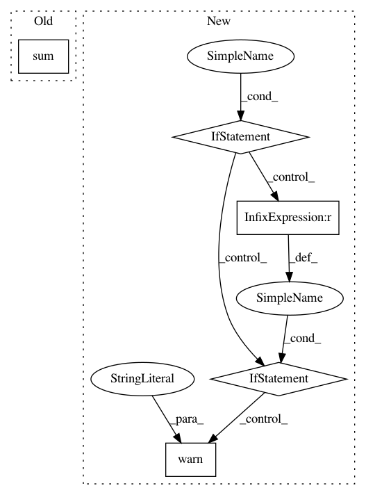

47ba6dedb917847460b098c5f2b776a4c8bd0c1b,torchdiffeq/_impl/adjoint.py,,odeint_adjoint,#Any#Any#Any#,168
Before Change
shapes, func, y0, t, rtol, atol, method, options, event_fn, decreasing_time = _check_inputs(func, y0, t, rtol, atol, method, options, event_fn, SOLVERS)
if "norm" in options and "norm" not in adjoint_options:
adjoint_shapes = [torch.Size(()), y0.shape, y0.shape] + [torch.Size([sum(param.numel() for param in adjoint_params)])]
adjoint_options["norm"] = _wrap_norm([_rms_norm, options["norm"], options["norm"]], adjoint_shapes)
ans = OdeintAdjointMethod.apply(shapes, func, y0, t, rtol, atol, method, options, event_fn, adjoint_rtol, adjoint_atol,
After Change
// Filter params that don"t require gradients.
for p in adjoint_params:
if not p.requires_grad:
// Issue a warning if a user-specified norm is specified.
if "norm" in adjoint_options and adjoint_options["norm"] != "seminorm":
warnings.warn("An adjoint parameter was passed without requiring gradient. For efficiency this will be "
"excluded from the adjoint pass, and will not appear as a tensor in the adjoint norm.")
adjoint_params = tuple(p for p in adjoint_params if p.requires_grad)
// Normalise to non-tupled state.
shapes, func, y0, t, rtol, atol, method, options, event_fn, decreasing_time = _check_inputs(func, y0, t, rtol, atol, method, options, event_fn, SOLVERS)
In pattern: SUPERPATTERN
Frequency: 3
Non-data size: 5
Instances
Project Name: rtqichen/torchdiffeq
Commit Name: 47ba6dedb917847460b098c5f2b776a4c8bd0c1b
Time: 2021-01-05
Author: rtqichen@gmail.com
File Name: torchdiffeq/_impl/adjoint.py
Class Name:
Method Name: odeint_adjoint
Project Name: nilearn/nilearn
Commit Name: 48282d57a0f11094d71c7310898ab347e6b847b3
Time: 2019-03-25
Author: gilles.de.hollander@gmail.com
File Name: nilearn/signal.py
Class Name:
Method Name: _standardize
Project Name: has2k1/plotnine
Commit Name: 035083f62466d569f2fbc576c887cf770bc5b057
Time: 2019-09-24
Author: has2k1@gmail.com
File Name: plotnine/stats/stat_density.py
Class Name:
Method Name: compute_density